ENGINE UNIT > REASSEMBLY |
| 1. INSTALL CYLINDER BLOCK UNION |
 |
Apply seal packing to 2 or 3 threads of the cylinder block union.
Install the union to the cylinder block.
| 2. INSTALL CYLINDER BLOCK WATER DRAIN COCK SUB-ASSEMBLY |
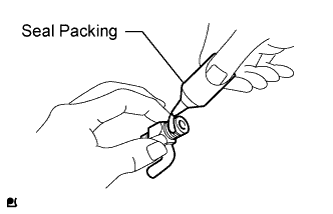 |
Apply seal packing to 2 or 3 threads of the drain cock.
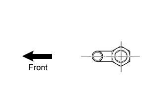 |
Install the 2 drain cocks as shown in the illustration.
Install the 2 drain cock plugs to the drain cock.
| 3. INSTALL ENGINE REAR OIL SEAL |
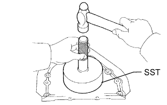 |
Place the oil seal retainer on wooden blocks.
Using SST and a hammer, tap in a new oil seal until its surface is flush with the rear oil seal retainer edge.
Apply MP grease to the lip of the oil seal.
| 4. INSTALL ENGINE REAR OIL SEAL RETAINER |
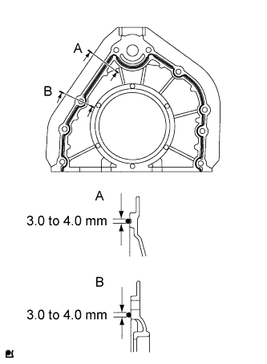 |
Apply seal packing to the oil seal retainer as shown in the illustration.
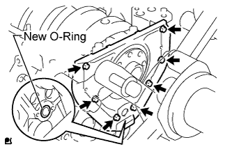 |
Install a new O-ring to the cylinder block.
Install the oil seal retainer with the 7 bolts.
| 5. INSTALL OIL PUMP SEAL |
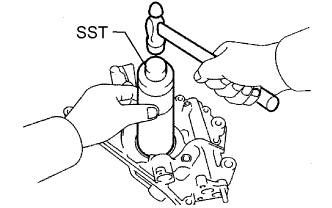 |
Place the oil pump on a wooden block.
Using SST and a hammer, tap in a new oil seal until its surface is flush with the oil pump body edge.
Apply MP grease to the lip of the oil seal.
| 6. INSTALL OIL PUMP ASSEMBLY |
 |
Apply a light coat of engine oil to a new O-ring and install it to the cylinder block.
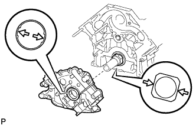 |
Align the oil pump drive rotor spline and the crankshaft as shown in the illustration.
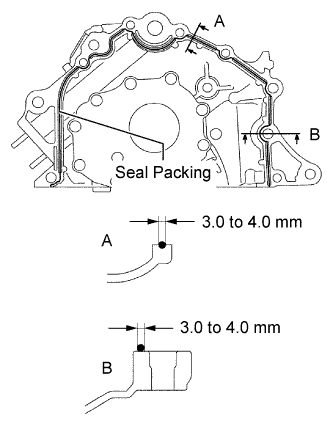 |
Apply seal packing to the oil pump as shown in the illustration.
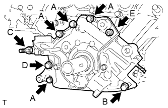 |
Install the oil pump with the stud bolt, 6 standard bolts and the 6 mm hexagon wrench bolt. Uniformly tighten the bolts in several steps.
| Item | Bolt Head Size | Length |
| Bolt A | 12 mm | 35 mm (1.38 in.) |
| Bolt B | 12 mm | 50 mm (1.97 in.) |
| Bolt C | 14 mm | 103 mm (4.06 in.) |
| Bolt D | 14 mm | 44 mm (1.73 in.) |
| Bolt E | 6 mm hexagon | 28 mm (1.10 in.) |
| 7. INSTALL OIL STRAINER SUB-ASSEMBLY |
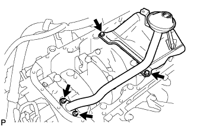 |
Install a new gasket and the oil strainer with the 2 bolts and 2 nuts.
| 8. INSTALL NO. 3 OIL PAN BAFFLE PLATE |
 |
Install the baffle plate with the 2 bolts.
| 9. INSTALL NO. 2 OIL PAN BAFFLE PLATE |
 |
Install the baffle plate with the 4 bolts.
| 10. INSTALL NO. 1 OIL PAN BAFFLE PLATE |
 |
Install the baffle plate with the 4 bolts.
| 11. INSTALL OIL PAN SUB-ASSEMBLY |
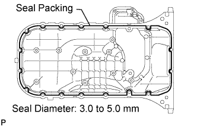 |
Apply seal packing to the oil pan as shown in the illustration.
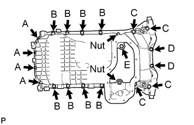 |
Temporarily install the oil pan with the 19 bolts and 2 nuts.
| Item | Bolt Head Size | Length |
| Bolt A | 10 mm | 22 mm (0.866 in.) |
| Bolt B | 12 mm | 25 mm (0.984 in.) |
| Bolt C | 12 mm | 60 mm (2.36 in.) |
| Bolt D | 10 mm | 35 mm (1.38 in.) |
| Bolt E | 10 mm | 22 mm (0.866 in.) |
Uniformly tighten the bolts and nuts in several passes.
| 12. INSTALL NO. 2 OIL PAN SUB-ASSEMBLY |
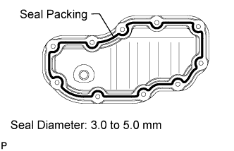 |
Apply seal packing to the No. 2 oil pan as shown in the illustration.
 |
Install the No. 2 oil pan with the 8 bolts and 2 nuts. Uniformly tighten the bolts and nuts in several passes.
| 13. INSTALL OIL FILTER BRACKET SUB-ASSEMBLY |
 |
Install a new gasket to the oil filter bracket.
Install the oil filter bracket with the bolt, stud bolt and nut.
| 14. INSTALL OIL PRESSURE SENDER GAUGE ASSEMBLY |
 |
Apply adhesive to 2 or 3 threads of the sender gauge.
 |
Install the sender gauge.
Connect the sender gauge connector.
| 15. INSTALL WATER PUMP ASSEMBLY |
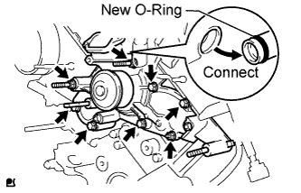 |
Apply soapy water to a new O-ring.
Install the O-ring to the water by-pass pipe end.
Install a new gasket to the cylinder block.
Connect the water pump to the water by-pass pipe end.
Temporarily install the water pump with the 5 bolts, 2 stud bolts and nut. Uniformly tighten the bolts, stud bolts and nut in several passes.
| 16. INSTALL CYLINDER HEAD GASKET LH |
 |
Clean the cylinder block and cylinder head with solvent.
Place a new cylinder head gasket in position on the cylinder block.
| 17. INSTALL CYLINDER HEAD LH |
 |
Check that the timing mark of the crankshaft timing pulley is in the position shown in the illustration, and that the piston is below the TDC of compression.
Install the cylinder head with the exhaust manifold to the cylinder block.
Apply a light coat of engine oil to the threads and under the heads of the cylinder head bolts.
Step 1:
Set the plate washer to the cylinder head bolt.
 |
Install and uniformly tighten the 10 cylinder head bolts and plate washers in the sequence shown in the illustration.
Step 2:
 |
Mark the cylinder head bolt head with paint as shown in the illustration.
Tighten the cylinder head bolts 90° in the sequence shown in step 1.
Step 3:
Tighten the cylinder head bolts another 90° in the sequence shown in step 1.
Check that the painted marks are now facing rearward.
| 18. INSTALL CYLINDER HEAD GASKET |
 |
Clean the cylinder block and cylinder head with solvent.
Place a new cylinder head gasket in position on the cylinder block.
| 19. INSTALL CYLINDER HEAD SUB-ASSEMBLY |
Install the cylinder head with the exhaust manifold to the cylinder block.
Apply a light coat of engine oil to the threads and under the heads of the cylinder head bolts.
Step 1:
Set the plate washer to the cylinder head bolt.
 |
Install and uniformly tighten the 10 cylinder head bolts and plate washers in the sequence shown in the illustration.
Step 2:
|
Mark the cylinder head bolt head with paint as shown in the illustration.
Tighten the cylinder head bolts 90° in the sequence shown in step 1.
Step 3:
Tighten the cylinder head bolts another 90° in the sequence shown in step 1.
Check that the painted marks are now facing rearward.
| 20. INSTALL CAMSHAFT SETTING OIL SEAL |
Apply MP grease to the lip of a new oil seal.
 |
Insert the oil seal into the camshaft timing tube until it reaches the stopper.
| 21. INSTALL CAMSHAFT DRIVE GEAR |
 |
Align the timing tube knock pin with the knock pin groove of the drive gear, and temporarily install the drive gear with the 4 bolts.
Using SST and a 5 mm hexagon wrench, uniformly tighten the 4 bolts in several steps, in the sequence shown in the illustration.
| 22. INSTALL CAMSHAFT TIMING TUBE ASSEMBLY |
 |
Mount the hexagonal portion of the camshaft in a vise.
Apply a light coat of engine oil to the camshaft and camshaft timing tube.
 |
Align the camshaft knock pin with the knock pin hole of the timing tube, and push the timing tube by hand until the camshaft knock pin touches the bottom of the timing tube knock pin hole.
Using a 10 mm socket hexagon wrench, install the bolt.
Install the seal washer and screw plug.
| 23. INSTALL CAMSHAFT SUB-GEAR |
 |
Install the gear spring, sub-gear and wave washer.
 |
Using snap ring pliers, install the snap ring.
 |
Mount the hexagonal portion of the camshaft in a vise.
 |
Using SST, align the holes of the driven gear and sub-gear by turning the sub-gear clockwise, and temporarily install a service bolt.
| Thread Diameter | Thread Pitch | Bolt Length |
| 6 mm | 1.0 mm | 16 to 20 mm (0.630 to 0.787 in.) |
Align the gear teeth of the driven gear and sub-gear, and tighten the service bolt.
| 24. INSTALL VALVE LIFTER |
Apply a light coat of engine oil to the valve lifters, adjusting shims and valve stem tips.
Install the valve lifters and adjusting shims.
| 25. INSTALL CAMSHAFT (for Bank 2) |
Apply a light coat of engine oil to the cam lobe and gear of the camshaft and the journal of the cylinder head.
 |
Using a wrench, align the timing marks (1 dot mark each) of the camshaft drive and driven gears, and set the camshaft and No. 2 camshaft in place.
 |
Apply seal packing to the camshaft housing plug groove.
 |
Install the camshaft housing plug and oil control valve filter to the cylinder head as shown in the illustration.
 |
Apply seal packing to the No. 1 bearing cap as shown in the illustration.
 |
Install a new seal washer to each bearing cap bolt indicated by an arrow in the illustration, and apply engine oil to the threads of the bolts. Then temporarily install them.
Apply engine oil to the threads and washer part of the bearing cap bolts not indicated in the illustration.
Temporarily install the oil feed pipe and bearing caps with the 18 bearing cap bolts, as shown in the illustration.
| Item | Length |
| Bolt A with seal washer | 94 mm (3.70 in.) |
| Bolt B with seal washer | 72 mm (2.84 in.) |
| Bolt C | 25 mm (0.984 in.) |
| Bolt D | 55 mm (2.17 in.) |
| Bolt E | 40 mm (1.58 in.) |
 |
Push in the camshaft setting oil seal.
 |
Uniformly tighten the 22 bearing cap bolts in several steps, in the sequence shown in the illustration.
 |
Bring the service bolt installed in the driven sub-gear upward by turning the hexagonal portion of the camshaft with a wrench.
Remove the service bolt.
| 26. INSTALL CAMSHAFT (for Bank 1) |
|
Check that the timing mark of the crankshaft timing pulley is in the position shown in the illustration, and that the piston is below the TDC of compression.
Apply a light coat of engine oil to the cam lobe and gear of the camshaft and the journal of the cylinder head.
 |
Using a wrench, align the timing marks (2 dot marks each) of the camshaft drive and driven gears, and set the No. 3 and No. 4 camshafts in place.
|
Apply seal packing to the camshaft housing plug groove.
 |
Install the camshaft housing plug and oil control valve filter to the cylinder head as shown in the illustration.
 |
Apply seal packing to the No. 5 bearing cap as shown in the illustration.
 |
Install a new seal washer to each bearing cap bolt indicated by an arrow in the illustration, and apply engine oil to the threads of the bolts. Then temporarily install them.
Apply engine oil to the threads and washer part of the bearing cap bolts not indicated in the illustration.
Temporarily install the oil feed pipe and bearing caps with the 18 bearing cap bolts, as shown in the illustration.
| Item | Length |
| Bolt A with seal washer | 94 mm (3.70 in.) |
| Bolt B with seal washer | 72 mm (2.84 in.) |
| Bolt C | 25 mm (0.984 in.) |
| Bolt D | 55 mm (2.17 in.) |
| Bolt E | 40 mm (1.58 in.) |
 |
Push in the camshaft setting oil seal.
 |
Uniformly tighten the 22 bearing cap bolts in several steps, in the sequence shown in the illustration.
 |
Bring the service bolt installed in the driven sub-gear upward by turning the hexagonal portion of the camshaft with a wrench.
Remove the service bolt.
| 27. INSTALL REAR TIMING BELT PLATE LH |
 |
Install the timing belt plate with the bolt.
| 28. INSTALL REAR NO. 2 TIMING BELT PLATE LH |
 |
Install the timing plate with the 2 bolts.
| 29. INSTALL REAR TIMING BELT PLATE RH |
 |
Install the timing belt plate with the bolt.
| 30. INSTALL REAR NO. 2 TIMING BELT PLATE RH |
 |
Install the timing plate with the 2 bolts and stud bolt.
| 31. INSTALL CAMSHAFT TIMING PULLEY |
 |
Align the camshaft timing tube knock pin with the knock pin groove of the timing pulley.
Temporarily install the 4 bolts of the camshaft timing pulley.
Hold the hexagonal portion of the camshaft with a wrench.
Using a 5 mm hexagon wrench, tighten the 4 bolts.
| 32. INSTALL CAMSHAFT TIMING PULLEY SUB-ASSEMBLY LH |
 |
Align the camshaft timing tube knock pin with the knock pin groove of the timing pulley.
Temporarily install the 4 bolts of the camshaft timing pulley.
Hold the hexagonal portion of the camshaft with a wrench.
Using a 5 mm hexagon wrench, tighten the 4 bolts.
| 33. INSTALL CRANKSHAFT TIMING PULLEY |
 |
Align the timing pulley set key with the key groove of the pulley.
Using SST and a hammer, tap in the timing pulley with the flange side facing inward.
| 34. INSTALL NO. 2 TIMING BELT IDLER SUB-ASSEMBLY |
 |
Install the timing belt idler with the bolt.
| 35. INSTALL NO. 1 TIMING BELT IDLER SUB-ASSEMBLY |
 |
When reusing the timing belt idler shaft, apply adhesive to 2 or 3 of the threads.
Using a 10 mm hexagon wrench, install the plate washer and timing belt idler with the idler shaft.
| 36. INSTALL TIMING BELT |
 |
Set the No. 1 cylinder to TDC/compression.
Turn the hexagonal portion of the camshaft to align the timing marks of the camshaft timing pulleys and timing belt plates.
 |
Using the pulley bolt, turn the crankshaft to align the timing marks of the crankshaft timing pulley and oil pump body.
 |
Install the timing belt.
Remove any oil or water from each pulley, and keep them clean.
Face the front mark (arrow) on the timing belt forward.
Align the timing marks on the timing belt and crankshaft timing pulley, and the timing belt and camshaft timing pulleys, and install the timing belt.
 |
Install the belt tensioner.
Remove the dust seal from the belt tensioner.
Using a press, slowly press in the push rod using a force of 981 to 9807 N (100 to 1000 kgf, 220.5 to 2204.7 lbf).
Align the holes of the push rod and housing, and pass a 1.5 mm hexagon wrench through the holes to keep the setting position of the push rod.
Release the press.
Install the dust seal to the belt tensioner.
 |
Temporarily install the belt tensioner with the 2 bolts.
Tighten the 2 bolts.
Using pliers, remove the 1.5 mm hexagon wrench from the timing belt tensioner.
| 37. CHECK NO. 1 CYLINDER TO TDC/COMPRESSION |
 |
Using the pulley bolt, slowly turn the crankshaft timing pulley 2 revolutions from the TDC to TDC.
Check that each pulley is aligned with each timing mark as shown in the illustration.
If the timing marks are not aligned, remove the timing belt and reinstall it.
Remove the pulley bolt.
| 38. INSPECT VALVE CLEARANCE |
Inspect the valve clearance (Click here).
If the result is not as specified, adjust the valve clearance (Click here).
| 39. INSTALL CAMSHAFT POSITION SENSOR ASSEMBLY |
 |
Install the camshaft position sensor with the bolt and stud bolt.
| 40. INSTALL SPARK PLUG TUBE GASKET |
 |
Using a cutter knife, cut off the seal part of the removed gasket.
 |
Using the removed gasket and a hammer, tap in a new gasket until it stops.
Apply a light coat of MP grease to the lip of the gasket.
Return the 8 ventilation case claws to the original positions.
| 41. INSTALL CYLINDER HEAD COVER SUB-ASSEMBLY |
 |
Install a new gasket to the cylinder head cover.
Apply seal packing to the cylinder head as shown in the illustration.
 |
Install the cylinder head cover with the 9 bolts. Uniformly tighten the bolts in several steps.
| 42. INSTALL CYLINDER HEAD COVER SUB-ASSEMBLY LH |
 |
Install a new gasket to the cylinder head cover.
Apply seal packing to the cylinder head as shown in the illustration.
 |
Install the cylinder head cover with the 9 bolts. Uniformly tighten the bolts in several steps.
| 43. INSTALL OIL FILLER CAP HOUSING |
 |
Install a new gasket and the housing with the 2 nuts.
| 44. INSTALL OIL FILLER CAP SUB-ASSEMBLY |
Install a new gasket to the oil filler cap.
Install the oil filler cap.
| 45. INSTALL SPARK PLUG |
Install the 8 spark plugs.
| 46. INSTALL NO. 1 ENGINE HANGER |
Install the engine hanger with the 2 bolts.

| 47. INSTALL NO. 1 CRANKSHAFT POSITION SENSOR PLATE |
 |
Install the sensor plate as shown in the illustration.
| 48. INSTALL TIMING BELT COVER SPACER |
 |
Install the cover spacer and gasket.
| 49. INSTALL NO. 1 TIMING BELT COVER |
 |
Install the timing belt cover with the 4 bolts.
| 50. INSTALL CRANKSHAFT DAMPER SUB-ASSEMBLY |
Align the pulley set key with the key groove of the crankshaft damper.
 |
Using SST, hold the crankshaft pulley and install the pulley bolt.
| 51. INSTALL FAN BRACKET SUB-ASSEMBLY |
 |
Install the fan bracket with the 2 bolts and 2 nuts.
| 52. INSTALL V-RIBBED BELT TENSIONER ASSEMBLY |
 |
Install the belt tensioner with the bolt and 2 nuts.
| 53. INSTALL NO. 2 TIMING BELT COVER SUB-ASSEMBLY |
 |
Install the timing belt cover and fit the 2 claws into each part.
Install the 2 bolts.
| 54. INSTALL NO. 3 TIMING BELT COVER SUB-ASSEMBLY LH |
 |
Pass the camshaft position sensor wire through the cover hole.
Install the timing belt cover with the 4 bolts.
Install the wire grommet to the timing belt cover.
Connect the sensor connector.
Install the sensor wire to the 2 wire clamps on the cover.
 |
Connect the engine wire to the 3 wire clamps.
Connect the camshaft timing oil control valve connector and control motor connector.
| 55. INSTALL NO. 3 TIMING BELT COVER SUB-ASSEMBLY RH |
 |
Install the timing belt cover with the 3 bolts and nut.
| 56. INSTALL NO. 2 IDLER PULLEY SUB-ASSEMBLY |
 |
Install the idler pulley and cover plate with the bolt.